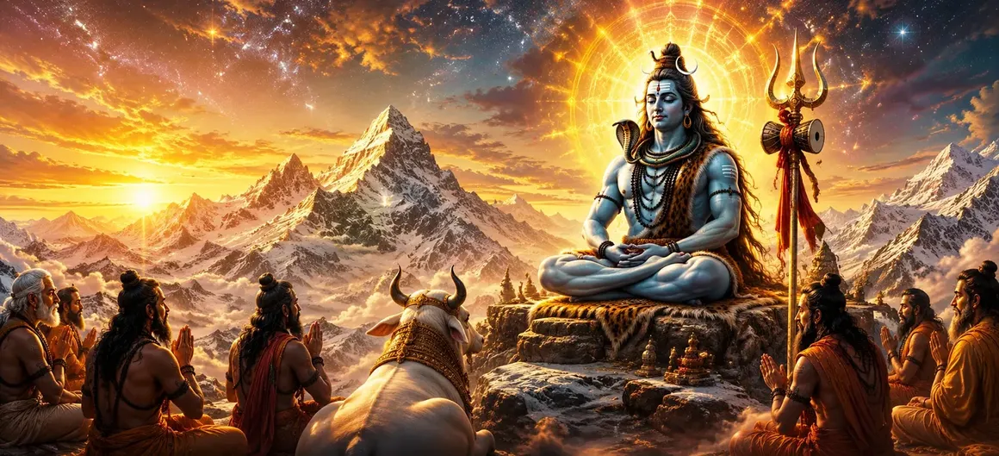

📖 Read the Sacred Shiva Purana Online • Har Har Mahadev 🔱
📖 পবিত্র শিব পুরাণ পাঠ করুন • হর হর মহাদেব 🔱

Chapter 4 → The Greatness of Lord Shiva
অধ্যায় ৪ → পরমেশ্বর শিবের মাহাত্ম্য
After hearing the questions of the sages, Suta Maharshi begins to reveal the greatness of Lord Shiva. He explains that Shiva is not merely a deity among many gods, but the Supreme Reality that exists beyond creation, time and space. The sages wished to understand the highest truth, and Suta now turns their attention toward the eternal nature of Mahadev.
This chapter introduces Shiva as the source from which the universe arises, by whom it is sustained and into whom it ultimately dissolves. Through devotion, wisdom and understanding of Shiva's true nature, seekers can attain peace, spiritual knowledge and liberation.
ঋষিদের প্রশ্ন শ্রবণের পর সূত মহর্ষি ভগবান শিবের মাহাত্ম্য বর্ণনা করতে শুরু করেন। তিনি ব্যাখ্যা করেন যে শিব কেবল বহু দেবতার মধ্যে একজন নন, বরং তিনি সেই পরম সত্য যিনি সৃষ্টি, সময় এবং স্থানের ঊর্ধ্বে অবস্থান করেন। ঋষিগণ সর্বোচ্চ সত্য জানতে চেয়েছিলেন, আর সূত মহর্ষি তাঁদের মনোযোগ মহাদেবের চিরন্তন স্বরূপের দিকে পরিচালিত করেন।
এই অধ্যায়ে শিবকে সেই পরম সত্তা হিসেবে পরিচয় করানো হয়েছে যাঁর থেকে বিশ্বব্রহ্মাণ্ডের উদ্ভব, যাঁর দ্বারা তার পালন এবং যাঁর মধ্যেই শেষ পর্যন্ত সবকিছু লয়প্রাপ্ত হয়। শিবের প্রকৃত স্বরূপ উপলব্ধির মাধ্যমে ভক্ত শান্তি, আধ্যাত্মিক জ্ঞান এবং মোক্ষ লাভ করতে পারে।
Who Is Lord Shiva?
ভগবান শিব কে?
Suta Maharshi explains that Lord Shiva is the Supreme Reality, the eternal and limitless Being who exists before creation, during creation and after creation. He is beyond birth and death, beyond form and limitation, and beyond the influence of time itself.
Although devotees worship Shiva in many forms, His true nature transcends all physical appearances. He is the source of divine wisdom, the refuge of all beings and the ultimate goal of spiritual realization. The gods, sages and enlightened beings revere Him as the highest truth.
Lord Shiva is both immanent and transcendent—present within every living being while simultaneously existing beyond the entire universe. For this reason, He is worshipped as Mahadeva, the Great God.
সূত মহর্ষি ব্যাখ্যা করেন যে ভগবান শিবই পরম সত্য, সেই চিরন্তন ও অসীম সত্তা যিনি সৃষ্টির পূর্বে, সৃষ্টিকালে এবং সৃষ্টির পরেও বিদ্যমান। তিনি জন্ম ও মৃত্যুর ঊর্ধ্বে, রূপ ও সীমাবদ্ধতার ঊর্ধ্বে এবং সময়ের প্রভাবেরও অতীত।
যদিও ভক্তরা শিবকে বিভিন্ন রূপে উপাসনা করেন, তাঁর প্রকৃত স্বরূপ সমস্ত বাহ্যিক রূপের অতীত। তিনি দিব্য জ্ঞানের উৎস, সকল জীবের আশ্রয় এবং আধ্যাত্মিক উপলব্ধির চূড়ান্ত লক্ষ্য। দেবতা, ঋষি ও জ্ঞানীগণ তাঁকে সর্বোচ্চ সত্য হিসেবে পূজা করেন।
ভগবান শিব একই সঙ্গে সর্বব্যাপী এবং অতীন্দ্রিয়—তিনি প্রতিটি জীবের অন্তরে অবস্থান করেন, আবার সমগ্র বিশ্বব্রহ্মাণ্ডেরও ঊর্ধ্বে বিরাজমান। এই কারণেই তাঁকে মহাদেব, অর্থাৎ ‘মহান দেবতা’ নামে অভিহিত করা হয়।
Why Is Shiva Called Mahadeva?
শিবকে মহাদেব বলা হয় কেন?
👑
Lord of All Gods
সকল দেবতার অধিপতি
Shiva is revered by gods, sages and celestial beings as the Supreme Lord beyond all divine powers.
শিবকে দেবতা, ঋষি এবং স্বর্গীয় সত্তাগণ সকল দিব্য শক্তির ঊর্ধ্বে পরম প্রভু হিসেবে পূজা করেন।
🌌
Source of the Universe
বিশ্বব্রহ্মাণ্ডের উৎস
All creation ultimately arises from the Supreme Reality represented by Lord Shiva.
সমস্ত সৃষ্টি শেষ পর্যন্ত ভগবান শিবরূপ পরম সত্য থেকেই প্রকাশিত হয়।
🔥
Power of Dissolution
সংহারের শক্তি
At the end of cosmic cycles, Shiva dissolves creation and restores everything to its original state.
মহাজাগতিক চক্রের শেষে শিব সৃষ্টিকে লয়ে নিয়ে সমস্ত কিছু তার আদি অবস্থায় ফিরিয়ে দেন।
🕉️
Embodiment of Truth
সত্যের মূর্ত প্রতীক
Shiva represents the eternal truth that never changes despite the constant changes of the world.
শিব সেই চিরন্তন সত্যের প্রতীক যা বিশ্বের পরিবর্তনের মধ্যেও অপরিবর্তিত থাকে।
🙏
Refuge of Devotees
ভক্তদের আশ্রয়
He protects devotees, removes suffering and grants spiritual blessings to those who worship Him sincerely.
তিনি ভক্তদের রক্ষা করেন, দুঃখ দূর করেন এবং আন্তরিক উপাসকদের আধ্যাত্মিক আশীর্বাদ প্রদান করেন।
✨
Bestower of Liberation
মোক্ষদাতা
Lord Shiva grants liberation and frees sincere seekers from the cycle of birth and death.
ভগবান শিব আন্তরিক সাধকদের জন্ম-মৃত্যুর চক্র থেকে মুক্তি প্রদান করেন।
Shiva's Role in Creation, Preservation and Dissolution
সৃষ্টি, পালন ও সংহারে শিবের ভূমিকা
Suta Maharshi explains that Lord Shiva is the supreme power behind the entire universe. Although creation, preservation and dissolution appear to be separate cosmic functions, they all originate from the same Supreme Reality.
When the universe emerges into existence, it does so through the divine will of Shiva. During its existence, all beings and worlds are sustained by His power. At the end of a cosmic cycle, everything returns to Him through dissolution. Thus, Shiva is both the beginning and the end of all creation.
The sages are taught that these cosmic processes are not independent forces but manifestations of the one eternal Lord. Brahma, Vishnu and other divine powers perform their respective functions through the supreme authority of Mahadeva.
By understanding Shiva as the source, sustainer and dissolver of the universe, a seeker develops deeper devotion and realizes the unity behind all existence.
সূত মহর্ষি ব্যাখ্যা করেন যে সমগ্র বিশ্বব্রহ্মাণ্ডের অন্তরালে ভগবান শিবই পরম শক্তি হিসেবে বিরাজমান। সৃষ্টি, পালন এবং সংহার পৃথক কার্য বলে মনে হলেও প্রকৃতপক্ষে সবই একই পরম সত্য থেকে উদ্ভূত।
যখন বিশ্বব্রহ্মাণ্ডের সৃষ্টি হয়, তা শিবের দিব্য ইচ্ছার মাধ্যমেই প্রকাশিত হয়। সৃষ্টির অস্তিত্বকাল জুড়ে সমস্ত জীব ও জগত তাঁর শক্তির দ্বারা ধারণ ও পালন হয়। আর মহাজাগতিক চক্রের শেষে সবকিছু পুনরায় তাঁর মধ্যেই লয়প্রাপ্ত হয়। এইভাবে শিবই সমস্ত সৃষ্টির আদি এবং অন্ত।
ঋষিগণ শিক্ষা লাভ করেন যে এই মহাজাগতিক কার্যগুলি আলাদা শক্তি নয়, বরং এক পরম ঈশ্বরের বিভিন্ন প্রকাশ। ব্রহ্মা, বিষ্ণু এবং অন্যান্য দিব্য শক্তিগণও মহাদেবের সর্বোচ্চ কর্তৃত্বের অধীনে তাঁদের নিজ নিজ কার্য সম্পাদন করেন।
শিবকে বিশ্বব্রহ্মাণ্ডের উৎস, পালনকর্তা ও সংহারকারী হিসেবে উপলব্ধি করলে ভক্তের মধ্যে গভীর ভক্তি জন্মায় এবং সে সমস্ত অস্তিত্বের অন্তর্নিহিত ঐক্য উপলব্ধি করতে সক্ষম হয়।
The Divine Qualities of Lord Shiva
ভগবান শিবের দিব্য গুণাবলি
❤️
Infinite Compassion
অসীম করুণা
Lord Shiva is known for His boundless compassion and quickly responds to the prayers of sincere devotees.
ভগবান শিব তাঁর অসীম করুণার জন্য পরিচিত এবং আন্তরিক ভক্তদের প্রার্থনায় দ্রুত সাড়া দেন।
🕉️
Supreme Wisdom
পরম জ্ঞান
He is the source of all spiritual knowledge and the eternal teacher of divine truth.
তিনি সমস্ত আধ্যাত্মিক জ্ঞানের উৎস এবং চিরন্তন সত্যের পরম শিক্ষক।
🌿
Perfect Detachment
পূর্ণ বৈরাগ্য
Though He governs the universe, Shiva remains detached from worldly desires and possessions.
যদিও তিনি সমগ্র বিশ্ব পরিচালনা করেন, তবুও তিনি পার্থিব কামনা ও আসক্তির ঊর্ধ্বে অবস্থান করেন।
🛡️
Protector of Devotees
ভক্তদের রক্ষাকর্তা
Shiva protects those who surrender to Him and guides them through difficulties.
শিব তাঁর শরণাগত ভক্তদের রক্ষা করেন এবং সকল বিপদে পথপ্রদর্শন করেন।
⚖️
Divine Justice
দিব্য ন্যায়
He rewards righteousness and ensures the balance of cosmic order.
তিনি ধর্মপরায়ণতাকে পুরস্কৃত করেন এবং বিশ্বব্যবস্থার সাম্য রক্ষা করেন।
✨
Bestower of Liberation
মোক্ষদাতা
Through His grace, devotees can transcend the cycle of birth and death and attain liberation.
তাঁর কৃপায় ভক্ত জন্ম-মৃত্যুর চক্র অতিক্রম করে মোক্ষ লাভ করতে পারে।
"Lord Shiva is the beginning, the middle and the end of all existence. He is the eternal reality beyond time, form and change."
"ভগবান শিবই সমগ্র অস্তিত্বের আদি, মধ্য ও অন্ত। তিনি সময়, রূপ এবং পরিবর্তনের অতীত চিরন্তন পরম সত্য।"
Main Teachings of the Chapter
অধ্যায়ের প্রধান শিক্ষা
🔱
Shiva Is the Supreme Reality
শিবই পরম সত্য
Lord Shiva exists beyond creation, time and space and is the eternal source of all existence.
ভগবান শিব সৃষ্টি, সময় ও স্থানের ঊর্ধ্বে অবস্থানকারী চিরন্তন পরম সত্য।
🌍
Source of the Universe
বিশ্বব্রহ্মাণ্ডের উৎস
All creation arises from Him, exists through Him and ultimately returns to Him.
সমস্ত সৃষ্টি তাঁর থেকেই উদ্ভূত হয়, তাঁর দ্বারাই ধারণ হয় এবং শেষ পর্যন্ত তাঁর মধ্যেই লয়প্রাপ্ত হয়।
❤️
Compassion Toward Devotees
ভক্তদের প্রতি করুণা
Mahadeva responds to sincere devotion and blesses those who remember Him with faith.
মহাদেব আন্তরিক ভক্তির প্রতি সাড়া দেন এবং বিশ্বাসের সঙ্গে তাঁকে স্মরণকারীকে আশীর্বাদ করেন।
🕉️
Knowledge Leads to Realization
জ্ঞান আধ্যাত্মিক উপলব্ধির পথ
Understanding Shiva's true nature helps remove ignorance and reveals eternal truth.
শিবের প্রকৃত স্বরূপ উপলব্ধি অজ্ঞতা দূর করে এবং চিরন্তন সত্যকে প্রকাশ করে।
🙏
Devotion Is Powerful
ভক্তির শক্তি
Through devotion and surrender, a devotee develops inner peace and spiritual strength.
ভক্তি ও আত্মসমর্পণের মাধ্যমে একজন ভক্ত অন্তরের শান্তি ও আধ্যাত্মিক শক্তি লাভ করে।
✨
Liberation Is Possible
মোক্ষ লাভ সম্ভব
The grace of Lord Shiva enables seekers to transcend the cycle of birth and death.
ভগবান শিবের কৃপায় সাধক জন্ম-মৃত্যুর চক্র অতিক্রম করে মোক্ষ লাভ করতে পারে।
Important Characters
গুরুত্বপূর্ণ চরিত্র
🔱
Lord Shiva
ভগবান শিব
📿
Suta Maharshi
সূত মহর্ষি
🙏
The Sages
ঋষিগণ
Did You Know?
আপনি কি জানেন?
This chapter teaches that Lord Shiva is worshipped not only as a deity but as the Supreme Reality itself. Many ancient scriptures describe Him as the eternal source from whom the universe originates and into whom it ultimately dissolves. For this reason, Shiva is often called Mahadeva—"The Great God"—and is revered by gods, sages and devotees alike.
এই অধ্যায়ে শিক্ষা দেওয়া হয়েছে যে ভগবান শিবকে কেবল একজন দেবতা হিসেবে নয়, বরং পরম সত্য হিসেবে পূজা করা হয়। বহু প্রাচীন শাস্ত্রে তাঁকে সেই চিরন্তন সত্তা হিসেবে বর্ণনা করা হয়েছে যাঁর থেকে বিশ্বব্রহ্মাণ্ডের সৃষ্টি এবং যাঁর মধ্যেই শেষ পর্যন্ত সমস্ত কিছু লয়প্রাপ্ত হয়। এই কারণেই শিবকে "মহাদেব" বা "মহান দেবতা" বলা হয় এবং দেবতা, ঋষি ও ভক্ত সকলেই তাঁকে শ্রদ্ধার সঙ্গে পূজা করেন।
What Happens Next?
পরবর্তী অধ্যায়ে কী ঘটবে?
After understanding the supreme greatness of Lord Shiva, the sages seek practical guidance for human life. In the next chapter, Suta Maharshi explains the Four Goals of Human Life—Dharma (righteousness), Artha (prosperity), Kama (righteous desires) and Moksha (liberation). The sages learn how these four Purusharthas guide human beings toward a balanced, meaningful and spiritually fulfilling life.
ভগবান শিবের পরম মাহাত্ম্য উপলব্ধি করার পর ঋষিগণ মানবজীবনের বাস্তব উদ্দেশ্য সম্পর্কে জানতে আগ্রহী হন। পরবর্তী অধ্যায়ে সূত মহর্ষি মানবজীবনের চারটি পুরুষার্থ—ধর্ম, অর্থ, কাম এবং মোক্ষ—সম্পর্কে বিশদভাবে ব্যাখ্যা করেন। ঋষিগণ জানতে পারেন কীভাবে এই চারটি লক্ষ্য মানুষকে সুষম, অর্থবহ এবং আধ্যাত্মিকভাবে পরিপূর্ণ জীবনের পথে পরিচালিত করে।
① Why is Lord Shiva called Mahadeva?
① ভগবান শিবকে মহাদেব বলা হয় কেন?
Lord Shiva is called Mahadeva because He is regarded as the Supreme Reality and the highest Lord worshipped by gods, sages and devotees. He is the source, sustainer and dissolver of the universe.
ভগবান শিবকে মহাদেব বলা হয় কারণ তাঁকে পরম সত্য এবং দেবতা, ঋষি ও ভক্ত সকলের পূজিত সর্বোচ্চ প্রভু হিসেবে বিবেচনা করা হয়। তিনিই বিশ্বব্রহ্মাণ্ডের উৎস, পালনকর্তা এবং সংহারকারী।
② Is Shiva greater than all other gods?
② শিব কি অন্যান্য সকল দেবতার চেয়ে শ্রেষ্ঠ?
According to this chapter of the Shiva Purana, Lord Shiva is presented as the Supreme Reality from whom all divine powers originate. The chapter emphasizes His supreme and eternal nature.
শিব পুরাণের এই অধ্যায় অনুসারে ভগবান শিবকে সেই পরম সত্য হিসেবে বর্ণনা করা হয়েছে যাঁর থেকে সমস্ত দিব্য শক্তির উদ্ভব। এই অধ্যায় তাঁর সর্বোচ্চ ও চিরন্তন স্বরূপকে গুরুত্ব দেয়।
③ What is the main teaching of this chapter?
③ এই অধ্যায়ের প্রধান শিক্ষা কী?
The chapter teaches that Lord Shiva is the eternal Supreme Reality, and understanding His true nature helps devotees attain wisdom, devotion and spiritual liberation.
এই অধ্যায় শিক্ষা দেয় যে ভগবান শিবই চিরন্তন পরম সত্য, এবং তাঁর প্রকৃত স্বরূপ উপলব্ধি করলে ভক্ত জ্ঞান, ভক্তি ও মোক্ষ লাভ করতে পারে।
④ How can devotees become closer to Lord Shiva?
④ ভক্তরা কীভাবে ভগবান শিবের আরও নিকটবর্তী হতে পারেন?
Through devotion, prayer, remembrance of Shiva's divine qualities and study of sacred scriptures such as the Shiva Purana, devotees strengthen their connection with Mahadeva.
ভক্তি, প্রার্থনা, শিবের দিব্য গুণাবলির স্মরণ এবং শিব পুরাণের মতো পবিত্র শাস্ত্র অধ্যয়নের মাধ্যমে ভক্তরা মহাদেবের সঙ্গে তাঁদের সম্পর্ক আরও গভীর করতে পারেন।
Continue Your Sacred Journey
আপনার পবিত্র যাত্রা অব্যাহত রাখুন
Explore the previous and next chapters of Vidyeshvara Samhita.
বিদ্যেশ্বর সংহিতার পূর্ববর্তী ও পরবর্তী অধ্যায় পাঠ করুন।